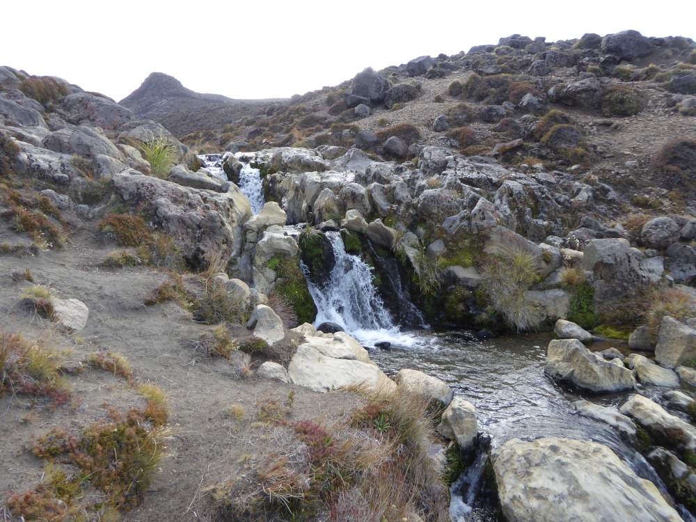
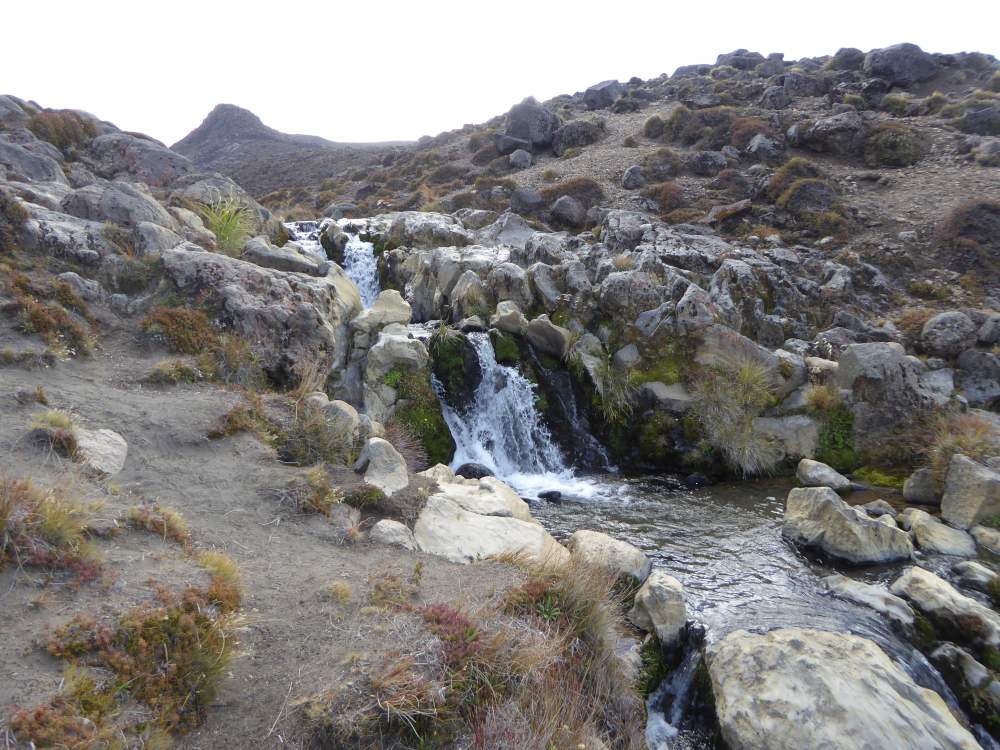

First time for Fiona but the second time for myself. Almost forty years ago it was my first ever exposure to New Zealand multi-day tramping. Back then we were young and fit, able to walk all day, have a beer at the local pub, drive all the way back to Wellington and go to work the following morning. Not this time. We drove from Wainuiomata to Whakapapa village where we stayed at the Skotel Alpine Resort. The pre-booked standard queen room was all we needed before and after the walk. March is not the busiest period in the ski resort. It meant we did not have to wait in queues at the bar or restaurant. We had a couple of drinks and a nice meal in a very relaxing atmosphere. All in the name of getting ready for the hard work.
 

Day 01
We were not keen on going up the Devil's Staircase or on sliding down on scree (volcanic rock) and therefore we opted for the anticlockwise approach. The day started for us following Round the Mountain Track towards Taranaki Falls. The 20-meter waterfall can be viewed either from the top or the bottom where it forms a rock-ringed pool. A very well photographed feature. Tama Lakes was our next destination. Both lower and upper lakes occupy old explosion craters. The Upper Tama Lake lies about 200 meters above the Lower Tama Lake and we decided to give it a miss. Instead, we continued on our adventure. We took a small detour to the historic Waihohonu Hut and then reached the final destination, the Waihohonu Hut. After securing our bunks we felt energetic enough to explore the surroundings. We were lucky to spot Whio / Blue Duck on the Ohinepango Stream. It was a fantastic day.
Day 02
After crossing the bridge over Waihohonu Spring it took us about 90 minutes to cross the steep ridge covered in old beech forest and reach the rocky parts of the track. It was such different scenery from the day before. We had this sensation of being in the mountains and at the same time of being in a different, mysterious world. A young tramper heading in the opposite direction told us we were almost there. Yeah right, after another hour or so we were the first ones to arrive at the Oturere Hut. A short track from the hut leads to the Oturere Falls. Surrounded only by the wilderness we had a refreshing dip in icy water and exposed our old bodies to the warm sun. It was a splendid way to finish the day.
Day 03
It was a big day. It started with a relatively short but steep climb from 1360 meters to 1740 meters above sea level that took us to the shores of the Emerald Lakes (Ngarotopounamu). A combination of sunlight and volcanic minerals gives the lakes their beautiful green colour. By the time we got to the Blue Lake, the temporary clouds settled over the central crater and the lake lost some of its blue colour. After a short break, we were ready for the last climb of the day. We climbed slowly but steadily for 145 vertical meters over just 400 horizontal meters of the famous Red Crater scree. By the time we reached the summit, the clouds disappeared and we enjoyed panoramic views from Taupo to the Kaimanawa Ranges. Fiona's cameras were overheating. The rest of the day we spent descending down the Devil's Staircase to the Mangatepopo Hut where we stayed for the last night while on track. The sunset with the outline of Mt Taranaki in the distance was magnificent.
Day 04
It was not the most exciting day. Four hours of going through historical lava flows and stream beds were tough on the knees and Fiona 's very sore calves. However, the views of the surrounding peaks were magnificent. Mount Ruapehu and Mount Ngauruhoe looked spectacular. We reached Whakapapa village well before the scheduled time. We picked up our car, showered and went for a little wander around the empty village. A visit to a coffee place in Chateau Tongariro Hotel was our afternoon entertainment. We finished the day with a few drinks and dinner at our hotel.